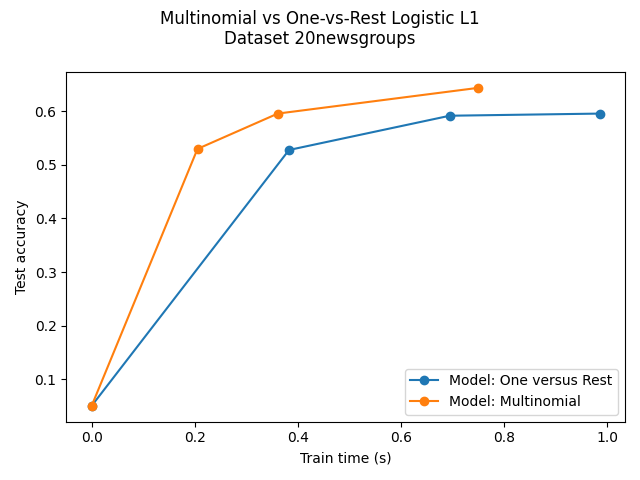

Note
Go to the end to download the full example code or to run this example in your browser via Binder
Multiclass sparse logistic regression on 20newgroups¶
Comparison of multinomial logistic L1 vs one-versus-rest L1 logistic regression to classify documents from the newgroups20 dataset. Multinomial logistic regression yields more accurate results and is faster to train on the larger scale dataset.
Here we use the l1 sparsity that trims the weights of not informative features to zero. This is good if the goal is to extract the strongly discriminative vocabulary of each class. If the goal is to get the best predictive accuracy, it is better to use the non sparsity-inducing l2 penalty instead.
A more traditional (and possibly better) way to predict on a sparse subset of input features would be to use univariate feature selection followed by a traditional (l2-penalised) logistic regression model.
Dataset 20newsgroup, train_samples=4500, n_features=130107, n_classes=20
[model=One versus Rest, solver=saga] Number of epochs: 1
[model=One versus Rest, solver=saga] Number of epochs: 2
[model=One versus Rest, solver=saga] Number of epochs: 3
Test accuracy for model ovr: 0.5960
% non-zero coefficients for model ovr, per class:
[0.26593496 0.43348936 0.26362917 0.31973683 0.37815029 0.2928359
0.27054655 0.62717609 0.19522393 0.30897646 0.34586917 0.28207552
0.34125758 0.29898468 0.34279478 0.59489497 0.38353048 0.35278655
0.19829832 0.14603365]
Run time (3 epochs) for model ovr:0.99
[model=Multinomial, solver=saga] Number of epochs: 1
[model=Multinomial, solver=saga] Number of epochs: 2
[model=Multinomial, solver=saga] Number of epochs: 5
Test accuracy for model multinomial: 0.6440
% non-zero coefficients for model multinomial, per class:
[0.36047253 0.1268187 0.10606655 0.17985197 0.5395559 0.07993421
0.06686804 0.21443888 0.11528972 0.2075215 0.10914094 0.11144673
0.13988486 0.09684337 0.26286057 0.11682692 0.55800226 0.17370318
0.11452112 0.14603365]
Run time (5 epochs) for model multinomial:0.75
Example run in 3.901 s
# Author: Arthur Mensch
import timeit
import warnings
import matplotlib.pyplot as plt
import numpy as np
from sklearn.datasets import fetch_20newsgroups_vectorized
from sklearn.exceptions import ConvergenceWarning
from sklearn.linear_model import LogisticRegression
from sklearn.model_selection import train_test_split
warnings.filterwarnings("ignore", category=ConvergenceWarning, module="sklearn")
t0 = timeit.default_timer()
# We use SAGA solver
solver = "saga"
# Turn down for faster run time
n_samples = 5000
X, y = fetch_20newsgroups_vectorized(subset="all", return_X_y=True)
X = X[:n_samples]
y = y[:n_samples]
X_train, X_test, y_train, y_test = train_test_split(
X, y, random_state=42, stratify=y, test_size=0.1
)
train_samples, n_features = X_train.shape
n_classes = np.unique(y).shape[0]
print(
"Dataset 20newsgroup, train_samples=%i, n_features=%i, n_classes=%i"
% (train_samples, n_features, n_classes)
)
models = {
"ovr": {"name": "One versus Rest", "iters": [1, 2, 3]},
"multinomial": {"name": "Multinomial", "iters": [1, 2, 5]},
}
for model in models:
# Add initial chance-level values for plotting purpose
accuracies = [1 / n_classes]
times = [0]
densities = [1]
model_params = models[model]
# Small number of epochs for fast runtime
for this_max_iter in model_params["iters"]:
print(
"[model=%s, solver=%s] Number of epochs: %s"
% (model_params["name"], solver, this_max_iter)
)
lr = LogisticRegression(
solver=solver,
multi_class=model,
penalty="l1",
max_iter=this_max_iter,
random_state=42,
)
t1 = timeit.default_timer()
lr.fit(X_train, y_train)
train_time = timeit.default_timer() - t1
y_pred = lr.predict(X_test)
accuracy = np.sum(y_pred == y_test) / y_test.shape[0]
density = np.mean(lr.coef_ != 0, axis=1) * 100
accuracies.append(accuracy)
densities.append(density)
times.append(train_time)
models[model]["times"] = times
models[model]["densities"] = densities
models[model]["accuracies"] = accuracies
print("Test accuracy for model %s: %.4f" % (model, accuracies[-1]))
print(
"%% non-zero coefficients for model %s, per class:\n %s"
% (model, densities[-1])
)
print(
"Run time (%i epochs) for model %s:%.2f"
% (model_params["iters"][-1], model, times[-1])
)
fig = plt.figure()
ax = fig.add_subplot(111)
for model in models:
name = models[model]["name"]
times = models[model]["times"]
accuracies = models[model]["accuracies"]
ax.plot(times, accuracies, marker="o", label="Model: %s" % name)
ax.set_xlabel("Train time (s)")
ax.set_ylabel("Test accuracy")
ax.legend()
fig.suptitle("Multinomial vs One-vs-Rest Logistic L1\nDataset %s" % "20newsgroups")
fig.tight_layout()
fig.subplots_adjust(top=0.85)
run_time = timeit.default_timer() - t0
print("Example run in %.3f s" % run_time)
plt.show()
Total running time of the script: (0 minutes 3.947 seconds)